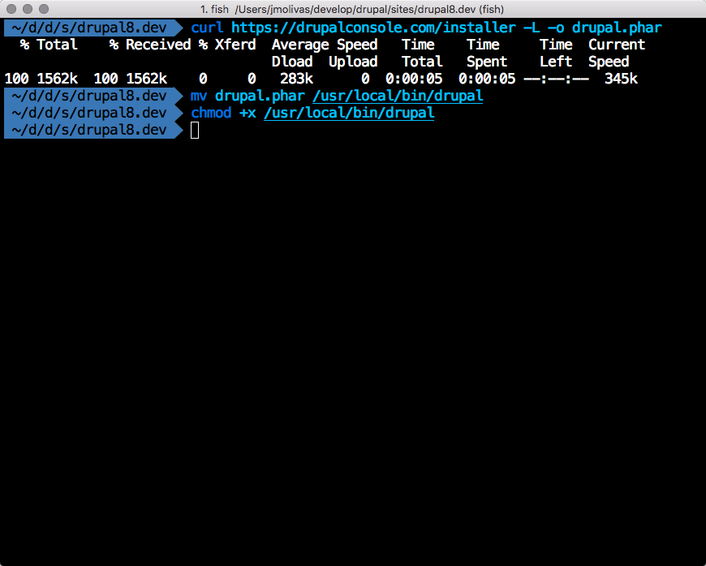
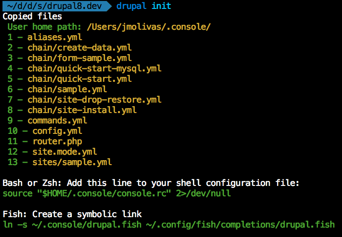
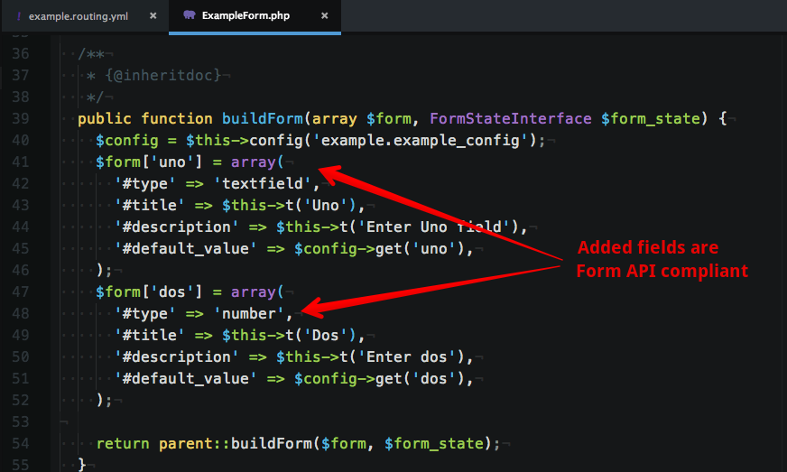
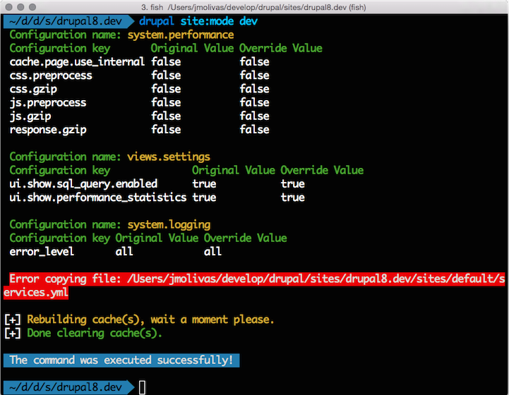
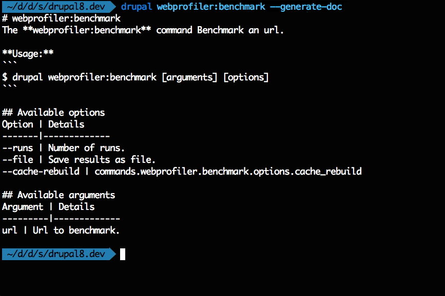
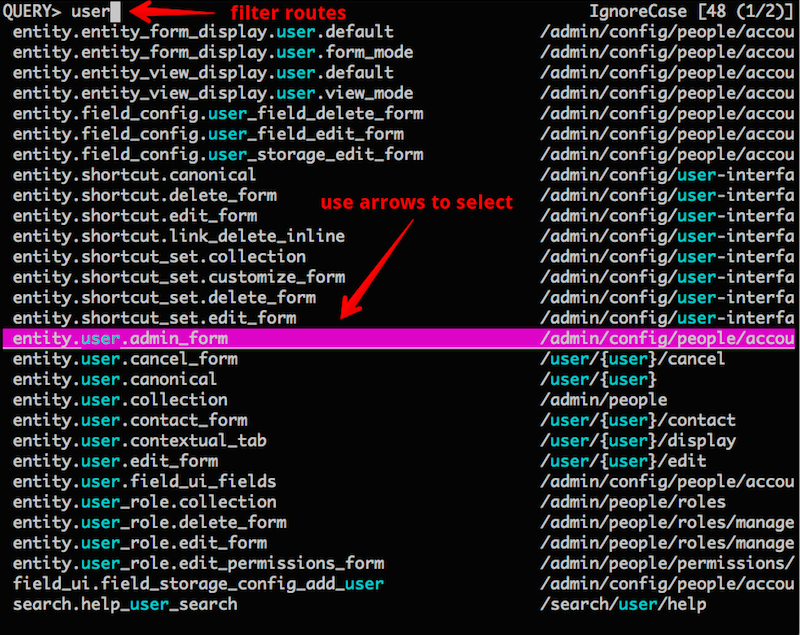

Faster and Smarter Development with Drupal Console
About us and who maintain this project?

David Flores | @dmouse

Eduardo García | @enzolutions

Jesús Manuel Olivas | @jmolivas

Omar Aguirre | @omers
What is the Drupal Console?
It is a suite of tools that you run on a command line interface (CLI) to generate boilerplate code and interact with a Drupal 8 installation.
Why should you care about it?
Drupal is more tehcnically advanced

Topics
- Where to find and how to Download Drupal Console
- Generate code/files required by a Drupal 8 module.
- Interact with your Drupal 8 installation.
- Learn Drupal 8.
- Write an integration.
- Automate command execution.
- Remote command execution.
- Contribute to the project and Roadmap.
Where do you find the project?
Download Drupal Console
Using the Installer
Install the Console locally by running the installer
in your project directory:
$ curl http://drupalconsole.com/installer | php
$ mv console.phar /usr/local/bin/drupal
$ drupal

Using Composer
$ composer global require drupal/console:@stable
# download at:
# ~/.composer/vendor/drupal/console
# run it using:
$ ~/.composer/vendor/bin/console
Gitbook - Using Composer
Using Drupal Composer
$ composer create-project
drupal-composer/drupal-project:8.x-dev
drupal8.dev
--stability dev
--no-interaction
https://github.com/drupal-composer/drupal-project
init

Generate the code and files
required by a Drupal 8 module.
generate:module

generate:controller

example.routing.yml

src/Form/ExampleForm.php

src/Form/ExampleForm.php

src/Form/ExampleForm.php

generate:plugin:block
$ drupal generate:plugin:block
--module="example"
--class-name="ExampleBlock"
--label="example_block"
--plugin-id="example_block"
--no-interaction


generate:entity:content
$ drupal generate:entity:content
--module="example"
--entity-class="Foo"
--entity-name="foo"
--no-interaction

Other generators
generate:authentication:provider
generate:entity:config
generate:event:subscriber
generate:permissions
generate:plugin:field
generate:plugin:fieldformatter
generate:plugin:fieldtype
generate:plugin:fieldwidget
generate:plugin:imageeffect
generate:plugin:rest:resource
generate:plugin:rulesaction
generate:plugin:type:annotation
generate:plugin:type:yaml
generate:service
generate:theme
Interact with your Drupal
installation.
site:install

container:debug

router:debug

router:debug

site:mode

site
site
site:maintenance [ON/OFF]
site:status
config
config
config:debug
config:edit
config:export
config:export:content:type
config:export:single
config:export:view
config:import
config:import:single
config:override
user
user
user:login:clear:attempts
user:login:url
user:password:hash
user:password:reset
Use --learning option
$ drupal generate:controller
--module="example"
--class-name="ExampleController"
--method-name="hello"
--route="/hello/{name}"
--learning
--no-interaction

Write an integration
generate:command
$ drupal generate:command
--module="example"
--class-name="HelloCommand"
--command="example:hello"
--no-interaction

webprofiler

https://www.drupal.org/project/webprofiler
webprofiler:benchmark

webprofiler
webprofiler:benchmark
webprofiler:export
webprofiler:list
Automate command execution
chain
$ drupal chain
--file=~/path/to/start-project.yml

site:debug

site:debug drupal8links.dev

drupal --target=drupal8links.dev cr all

#Protip 1
Use --root option
$ drupal --root=/var/www/drupal8.dev
#Protip 2
Use multilanguage feature
# ~/.console/config.yml
application:
environment: 'prod'
language: en #available: en,es,fr,hu,pt,ro
editor: vim
temp: /tmp


#Protip 3
Use default values
# ~/.console/config.yml
application:
...
default:
commands:
generate:
controller:
options:
module: my_current_project
#Protip 4
Disable contributed commands
# ~/.console/config.yml
application:
...
disable:
modules:
- broken_module_name_one
- broken_module_name_two
#Protip 5
Use command alias
$ drupal cr all
# ~/.console/aliases.yml
application:
aliases:
commands:
cache:
rebuild:
- cr
#Protip 6
Use --help option
$ drupal generate:module --help

#Protip 7
Use --generate-inline
$ drupal generate:entity:config --generate-inline

#Protip 8
Use --generate-chain
$ drupal generate:module --generate-chain

#Protip 9
Use --generate-doc
$ drupal webprofiler:benchmark --generate-doc

#Protip 10
Use peco command
$ drupal router:debug
| peco | awk -F ' ' '{print $1}' |
xargs drupal router:debug

self-update
Depending on the download method:
$ drupal self-update
$ console self-update
$ php console.phar self-update
Using a Virtual Machine
How to contribute?
Getting the project
Fork your own copy of the Console repository
http://bit.ly/console-fork
Clone your forked repository.
$ git clone git@github.com:[github-user]/DrupalConsole.git
Download dependencies using componser.
$ cd /path/to/DrupalConsole
$ composer install
PHPQA all-in-one Analyzer CLI tool
- PHP Parallel Lint
- PHP_CodeSniffer
- PHPLOC
- PHP Mess Detector
- PHPUnit
Running PHPQA manually
$ cd /path/to/DrupalConsole
$ phpqa analyze --files=src/
Running PHPQA automatically
$ vim .git/hooks/pre-commit
# Paste this:
phpqa analyze --git
Contributors
Spread the word and love.
 /~drupalconsole
/~drupalconsole

@drupalconsole | #drupalconsole
Increase code coverage.
Multi-site support.
Improve documentation and translations.
Improve verbose code-output.
Dummy content generation.
Upcomming implementations
Meta tag
Rules
[Your module here]
"Let's work together to make
awesome tools even better."
~Greg Anderson
Drush integration
https://github.com/drush-ops/drush/pull/1337
GUI for the CLI.
http://drupalgenerator.com/